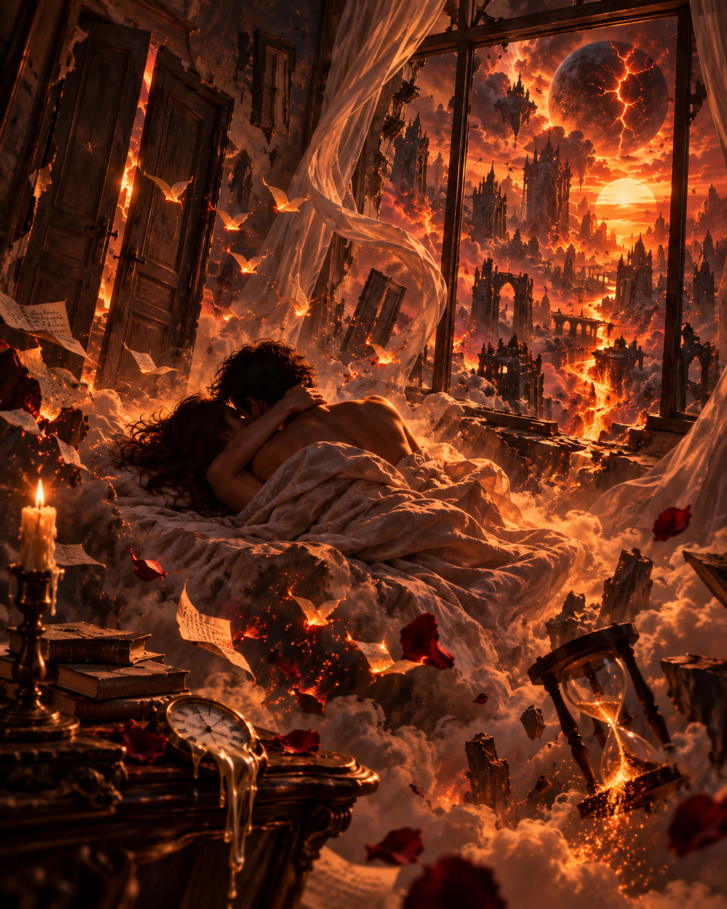
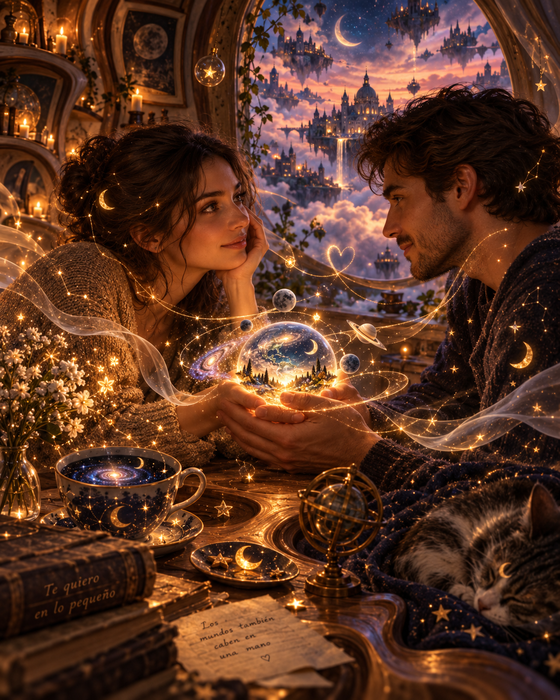
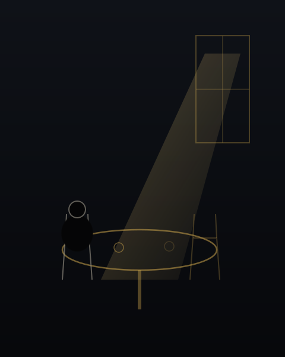
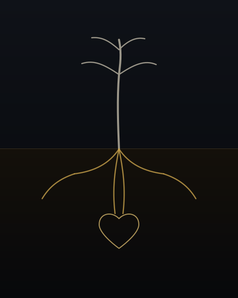
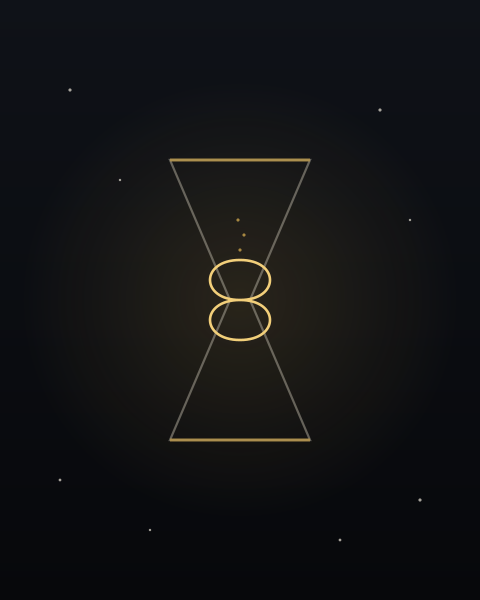
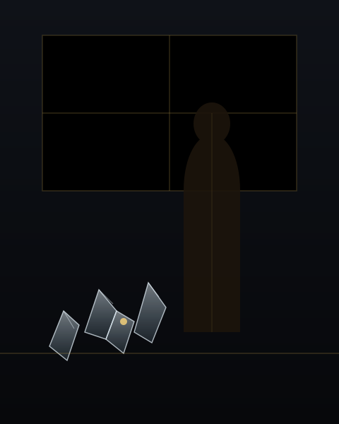

I
Apocalipsis I
Te amo a plena luz, con las puertas cerradas, ocultos del mundo, mientras el día arde detrás de las ventanas.
Afuera todo termina;
aquí, sobre tu cuerpo,
el último día del mundo
parece apenas
nuestro primer día.

8 de septiembre, 9:45 p.m.
II
Amor diminuto
Te quiero en lo pequeño:
en tu mano buscando la mía,
en el silencio que no incomoda,
en ese instante mínimo
en que me mirás
y el mundo,
sin saberlo,
se vuelve suficiente.

2 de septiembre, 9:53 a.m.
III
Domingo
Te extraño un domingo, sin promesas eternas; solo con la certeza de que cuando estás, el mundo pesa menos.

30 de agosto, 1:10 p.m.
IV
Silencio
Te amo en silencio,
como ama la raíz a la tierra:
sin que nadie lo vea,
pero sosteniéndolo todo.
Y si algún día me pierdo,
búscame adentro tuyo:
allí donde vive intacto
todo lo que fuimos.

27 de agosto, 11:09 p.m.
V
La medida del tiempo
No sé cuándo empezó. Tal vez fue antes de conocerte, cuando algo en mí ya esperaba una forma de tu voz, una manera de mirar, ese lugar exacto donde después iba a encontrarte.
Desde entonces, el tiempo se volvió extraño. Hay horas que pasan sin dejar huella y minutos contigo que permanecen durante años.
No te amo porque seas refugio. Te amo porque también eres intemperie: porque en vos encuentro calma y, al mismo tiempo, todo aquello que me obliga a sentir.
Hay algo inexplicable en saber que una persona puede convertirse en medida: de la distancia, de la ausencia, de la alegría, del miedo.
Y entonces comprendo que amar no es poseer, ni prometer eternidades. Es reconocer. Reconocer entre millones de rostros a alguien cuya existencia modifica silenciosamente la nuestra.
Por eso, si alguna vez me preguntan cuánto tiempo te quise, no sabré responder. Porque hay amores que no caben en los calendarios. Empiezan mucho antes del encuentro y, de alguna manera, continúan incluso después del tiempo.

26 de agosto, 9:58 p.m.
VI
Jardín de vidrio
Creamos sobre la arquitectura gubernamental un edén de sentimientos y palabras, bajo un cielo que no sabe mentir, pero la arcilla siempre busca el abismo.
Tu boca ajena sabe a fruta robada, que bien podría ser un relámpago dulce en la sombra del hotel.
Nos amamos sin nombres, fuera del mapa, bebiendo la culpa en copas de celofán, sabiendo que el mañana no nos pertenece.
La música cesa.
El arpa pincha la piel.
Pagamos el incendio con frío eterno, solos, rotos, bajo la mirada sorda de un dios de madera.

16 de julio, 7:31 p.m.